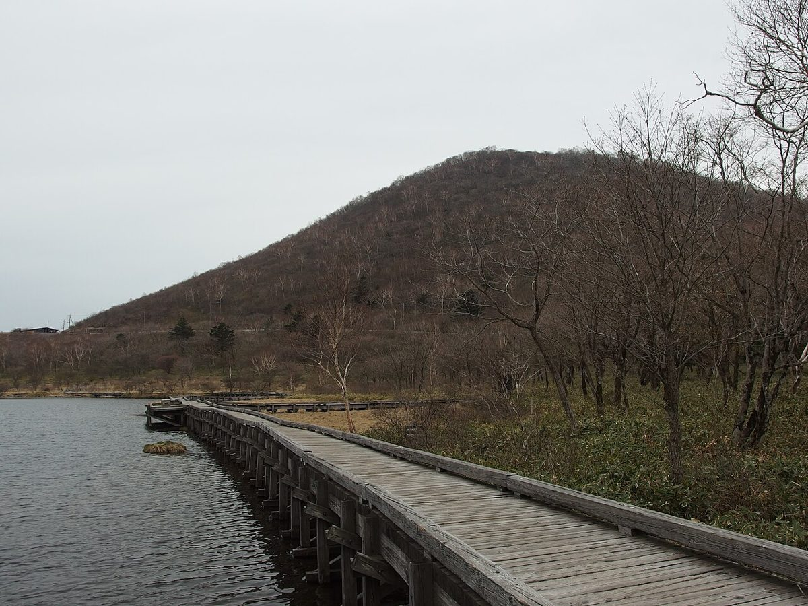
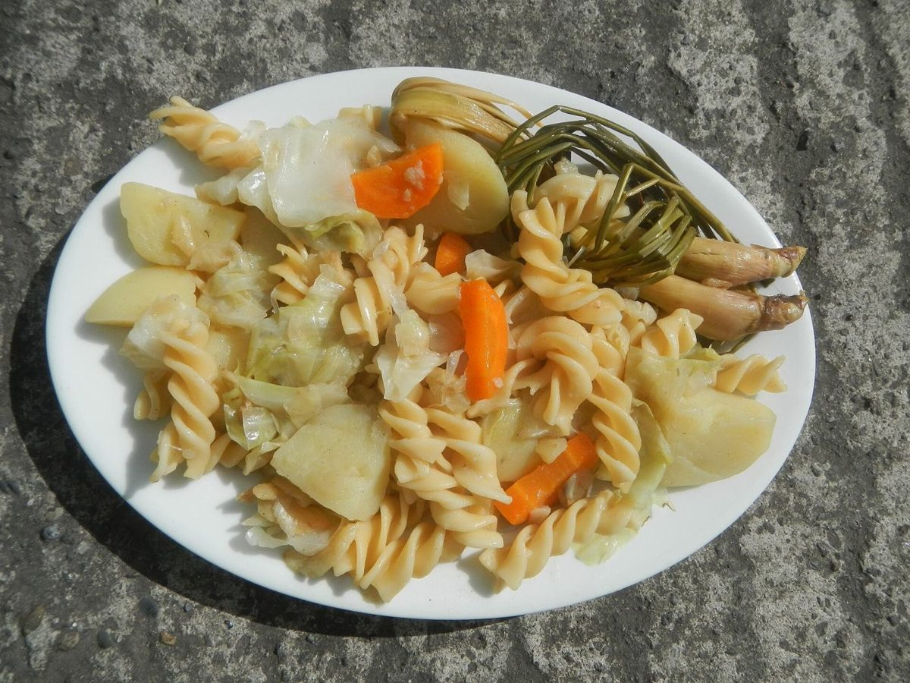
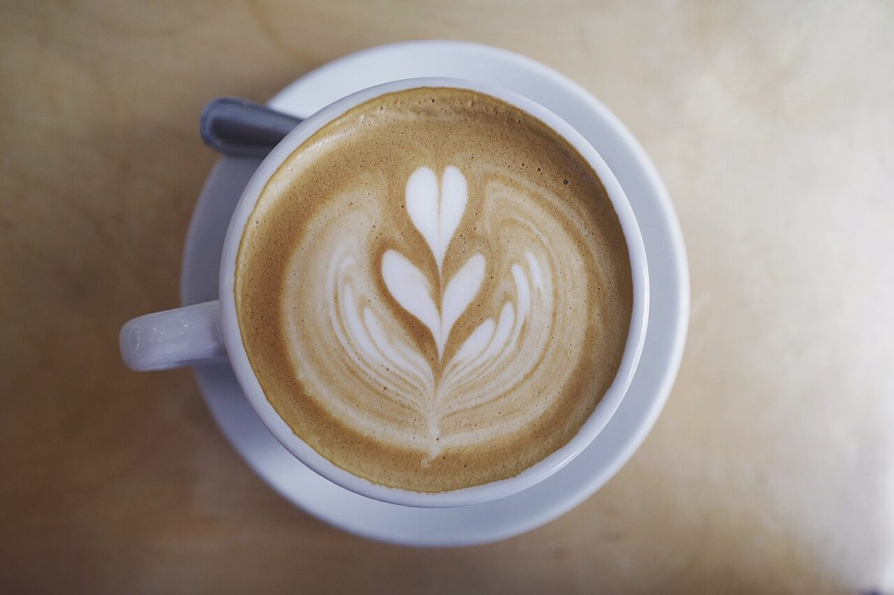
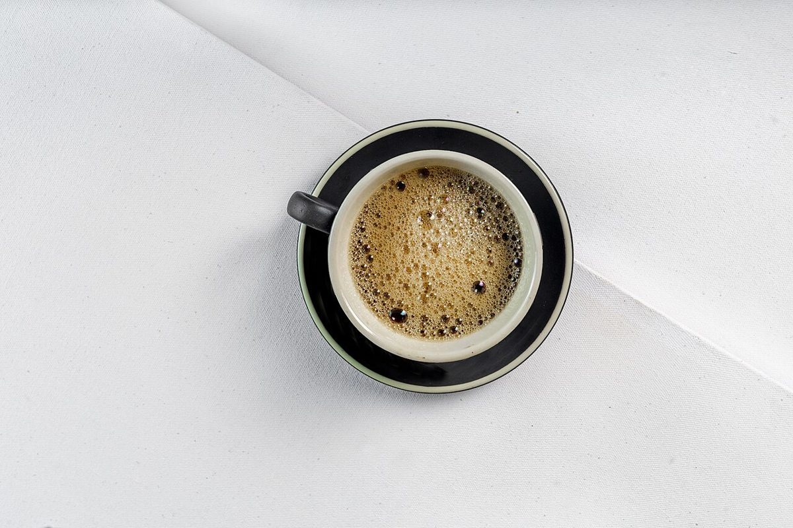
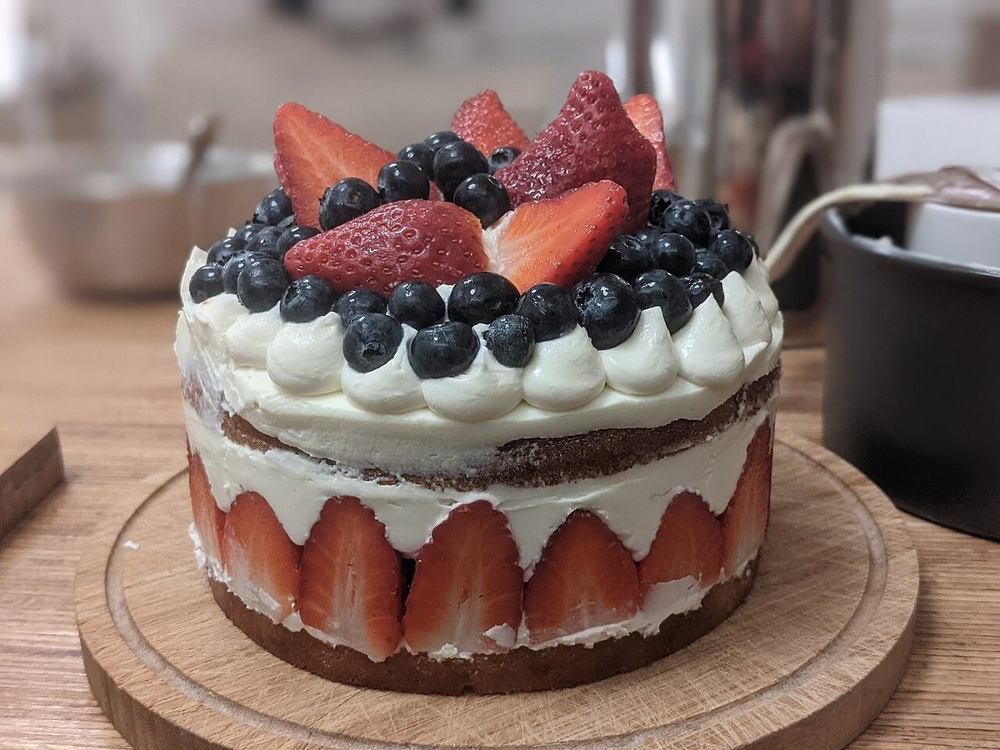
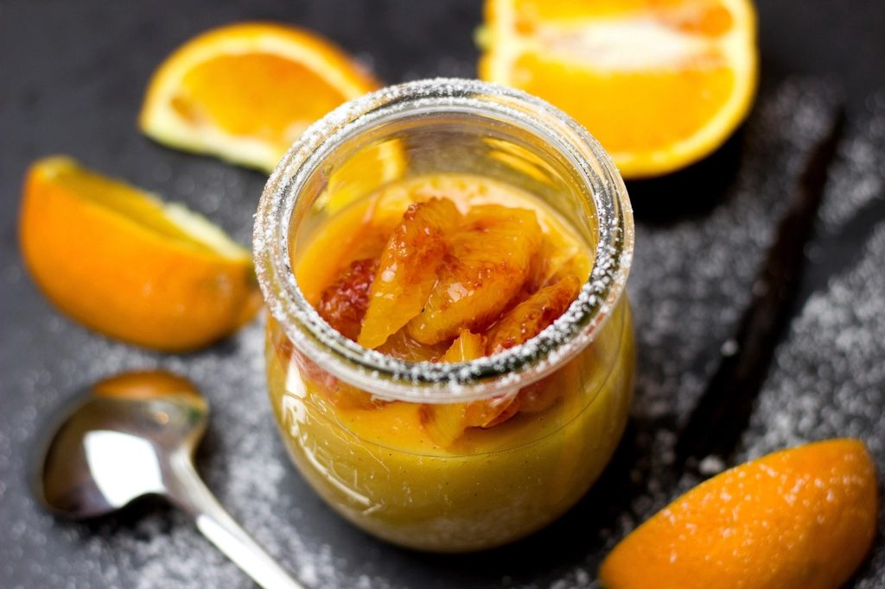
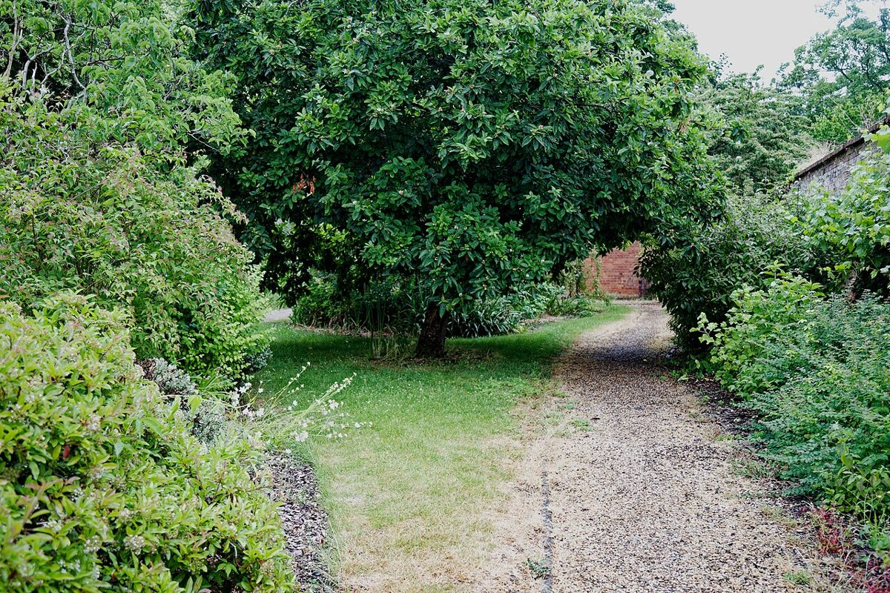
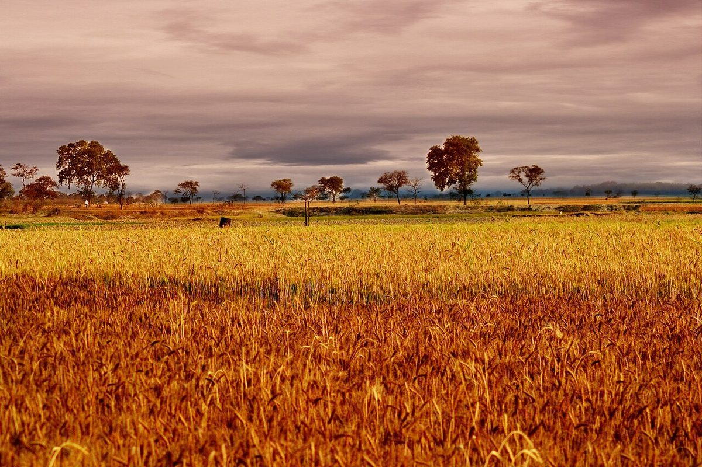
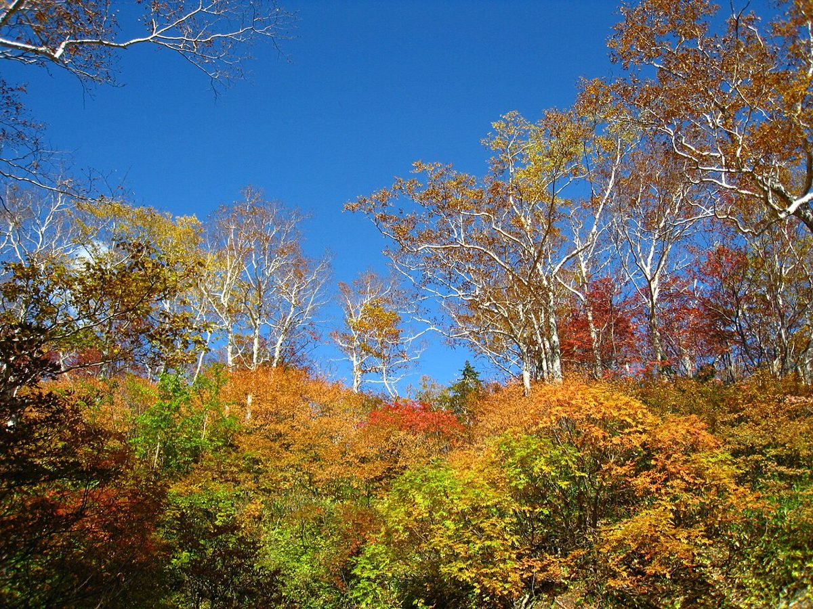

岩国市美和町のカフェ
Hilltop cafe
アメリカで出会った味を、地元の野菜で。丘の上のような、のびやかなごはんとスイーツを。
写真: 湖畔の木道と山 / Guilhem Vellut / CC BY 2.0
掲載の写真はフリー素材のイメージで、店舗の実際の様子・料理ではありません。実際の写真はご提供のものに差し替えます。
LUNCH & SWEETS
ランチとスイーツ
Instagramのプロフィールには「Lunch&sweets」のハイライトがあり、ランチとスイーツを楽しめるカフェのようです。具体的な品書きは確認できていません。













VOICE
口コミ イメージ例
イメージ例
野菜がたっぷりで、ランチのあとは体も気持ちも軽くなりました。
イメージ例
静かな山あいの道を走って、のんびりお茶をしに行きたくなるお店です。
イメージ例
Instagramで見て気になっていたスイーツ、次の営業日に食べに行きたいです。
上記は制作側が作成したイメージ例で、実在のお客様の声ではありません。
ABOUT
お店のこと
Instagramのプロフィールによると、Hilltop cafeは「夫婦がアメリカで体験した料理を地元野菜を使って再現」しているカフェです。海の向こうで出会った味を、岩国市美和町の野菜でつくる。そのまっすぐな想いを、このページでは「丘の上から見渡すような、のびやかさ」で表現しました。
店名「Hilltop」(丘の頂上)の意味や由来は確認できていません。丘のイメージは制作側のイメージです。
ACCESS
アクセス
| 所在地 | 〒740-1215 山口県岩国市美和町長谷1135 |
|---|---|
| 営業日・時間 | 木・金・土 11:30〜15:30(ランチL.O. 14:00) Instagramプロフィール記載。月ごとの営業日はInstagramでご確認ください。 |
| 電話 | 準備中 |
| 駐車場 | 準備中 |
| @hilltopcafemiwa |
PHOTO CREDITS
写真クレジット
- ジャガイモ・ニンジン・キャベツとフジッリの皿「Potatoes, carrots and cabbage with fusilli in lemon grass casserole 02」 作者: Judgefloro / CC0 1.0 / 出典: https://commons.wikimedia.org/wiki/File:0811Potatoes,_carrots_and_cabbage_with_fusilli_in_lemon_grass_casserole_02.jpg
- 積まれた新鮮なニンジン「Fresh Carrots」 作者: Yerson Retamel / CC0 1.0 / 出典: https://commons.wikimedia.org/wiki/File:Fresh_Carrots.jpg
- 土のついたラディッシュ「Confinement 2020 - modeste première récolte de radis」 作者: Benoît Prieur / CC0 1.0 / 出典: https://commons.wikimedia.org/wiki/File:Confinement_2020_-_modeste_premi%C3%A8re_r%C3%A9colte_de_radis.jpg
- 皿にのったモカケーキ「Mocha Cake - Djanogly Café, Tate Britain 2026-03-24」 作者: Andy Li / CC0 1.0 / 出典: https://commons.wikimedia.org/wiki/File:Mocha_Cake_-_Djanogly_Caf%C3%A9,_Tate_Britain_2026-03-24.jpg
- オレンジを添えた瓶入りデザート「(題名不明・rawpixel掲載)」 作者: 作者記載なし / CC0 1.0 / 出典: フリー素材フォルダ記録(0dc59f24_pudding.jpg)
- 庭の小道「Garden path Harlow Museum & Walled Gardens, Essex 01」 作者: Acabashi / CC BY-SA 4.0 / 出典: https://commons.wikimedia.org/wiki/File:Garden_path_Harlow_Museum_%26_Walled_Gardens,_Essex_01.jpg
- いちごとブルーベリーのケーキ「ツョートケーキ」 作者: Shisma / CC BY 4.0 / 出典: https://commons.wikimedia.org/wiki/File:%E3%83%84%E3%83%A7%E3%83%BC%E3%83%88%E3%82%B1%E3%83%BC%E3%82%AD.jpg
- ラテアートのカップ「Two Hands Cafe latte art (Unsplash)」 作者: Drew Coffman / CC0 1.0 / 出典: https://commons.wikimedia.org/wiki/File:Two_Hands_Cafe_latte_art_(Unsplash).jpg
- 湖畔の木道と山「覚満淵(群馬)の風景」 作者: Guilhem Vellut / CC BY 2.0 / 出典: フリー素材フォルダ記録(02e5a668_kakumanbuchi-hill.jpg)
- 高原の秋の木々「高原の秋空 (panoramio)」 作者: pakku / CC BY 3.0 / 出典: フリー素材フォルダ記録(1e79d666_autumn-plateau.jpg)
- チョコレートケーキとコーヒー「Baileys Chocolate Cake - Cafe Coho 2026-01-08」 作者: Andy Li / CC0 1.0 / 出典: https://commons.wikimedia.org/wiki/File:Baileys_Chocolate_Cake_-_Cafe_Coho_2026-01-08.jpg
- 白い机の上のコーヒー「Espresso Coffee 01」 作者: Jubair1985 / CC0 1.0 / 出典: https://commons.wikimedia.org/wiki/File:Espresso_Coffee_01.jpg
- 黄金色の麦畑「Golden wheat field」 作者: Nupur Dasgupta / CC BY 2.0 / 出典: https://commons.wikimedia.org/wiki/File:Golden_wheat_field.jpg
- 木のテーブルのカフェラテ「The cup of coffee on a wooden table (47939081677)」 作者: Artem Beliaikin / CC BY 2.0 / 出典: https://commons.wikimedia.org/wiki/File:The_cup_of_coffee_on_a_wooden_table_(47939081677).jpg